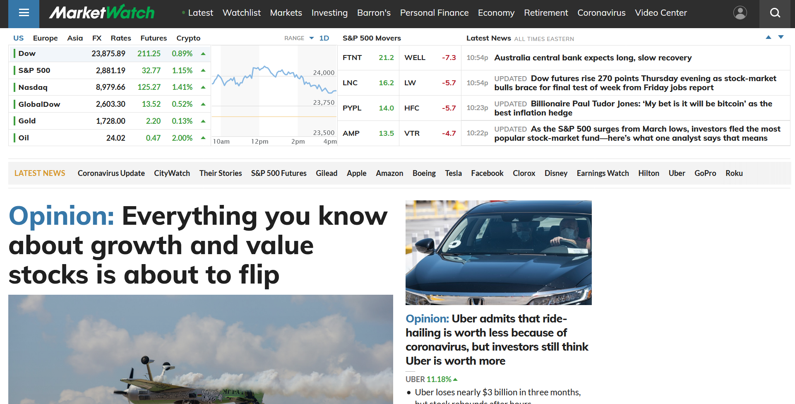
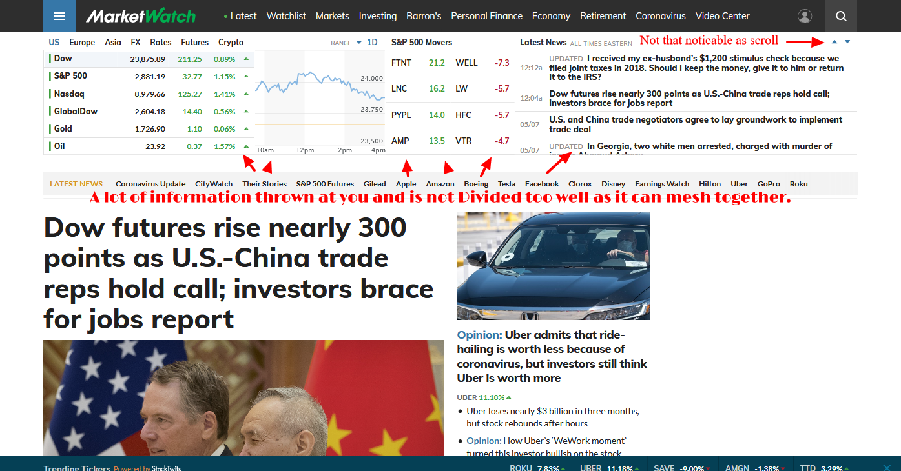
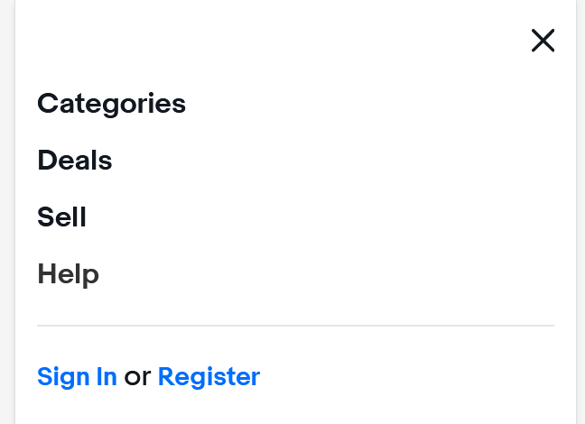
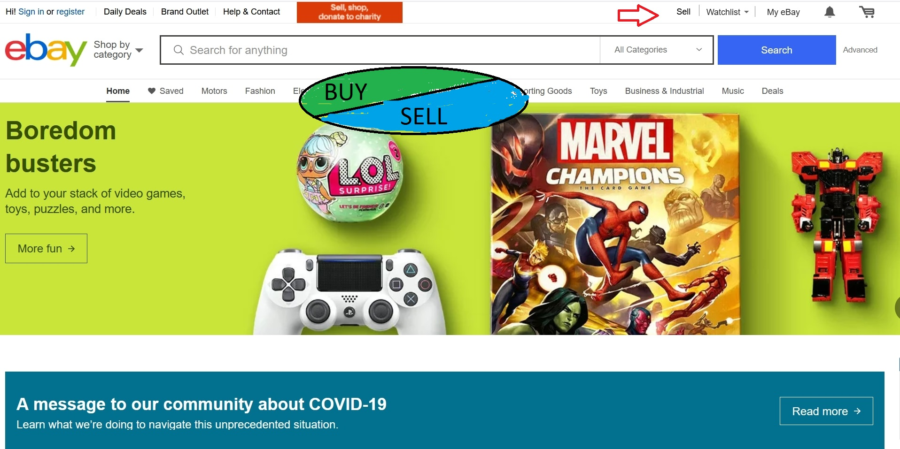

Evaluating Accessibility
- Basis of this site is a - Finance Website.
Marketwatch.com
Criteria Overview
- Evaluate chosen site for accessibility
marketwatch.com and look for relevant adherance or possible adjustments to meet guidelines in present web development standards.
- Does website adhere to accessibility standards - based of Krugg readings
- Ease of reading
- Page Format
- Mindless click
- Does the website apply further accessibility relating to Section 508
- site follow
- ease of navigation ( amount of taps)
- Collective overview on possiible improvments
- site follow
- ease of navigation ( amount of taps)
1 Accessibility -Krugg readings
-- Positives --
- Page Navigation
- At first glance, following Top to Bottom and Left to Right, The fromt page follows a top down approach. The main features are at the top
and flow downward.
- Scanning
- the main story is posted first and each subsequent story is followed underneath by a bullet point and Each story is divided into a section
by panels
- Heirarchy
- There is a sense of heirarchy because as you scroll down the page each section is depicted on the top left by a large header and a bar that secitons
off and denotes where you are at. Also as mentioned above in scanning, each story has a nice header and is followed by smaller stories with bullet points.
-- Negatives --

- Size
- There are some issues with size on some fonts as I easily glanced over some words even with letters bolded. Also Icons arnt well identitifed on what
they are supposed to do.
- Heirarchy
- It was this particular Section that felt a little too much. There was a lot of data thown at me and even though there are dividers, they are small and thing
so everything feels meshed together to find too much information when looking over.
2: Section 508
-- Positive --
- Time Spent
- As having buying experience User 2 also took around 2 minuits or less to buy an item
- ease of navigation ( amount of taps)
- Straight forward, the search bar was the first thing the User 2 found and tapped on 12 taps before checking out.
-- Negatives --
- Time Spent
- User 2 spent a few seconds looking for the "sell" button based on previous experience 10 mins to sell an item
- ease of navigation ( amount of taps)
- The user took about 30 taps to complete putting an item for sale.
Again, user was given the option to auto-fill beased on a similar item being sold and could modofify any area needed afterward.
Overview
-
Basically each user notified me they had a more effective time once they found out where
everything was placed. The most troublesome location to find was the "sell" button which was
hidden within the hamburger menu,
but after a few simple taps and the users knew where the layout of the site via mobile size
was, everything seemed to
"click" .
- User 2 and user 3 mentioned that since the whole site was more condensed everything was focused on the center and so their attention wasn't all looking through a "full" page looking at all the details which helped a lot in making faster actions.
- One fun fact to identify is that All the users who during the "buying Phase" took 2 mins or less, because they mentions the search bar was front and center and there were not distracted by other items, they could just focus on buying something.
- one last useful bit of information about the usability aspect found from Ebay, is that during the selling portion every user was given an expedited "auto-fill" option when selling because of a similar sold item which boosted the speed of their selling and user experience getting from A > B
-- Possible Improvemnts --
- Icons
- user 3 and user 2 this time mentioned to me that "sell" was a little hidden and not very straightforward.
They didn't understand why it was not front and center like the serach-bar, so they re-iterated that would would enjoy a "sell button" dead center either above or bellow the search-bar

